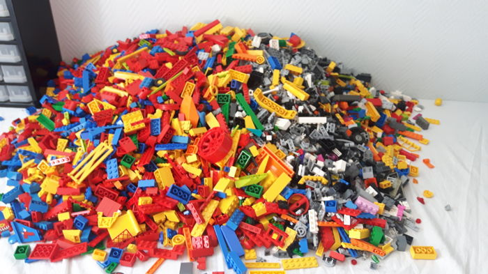
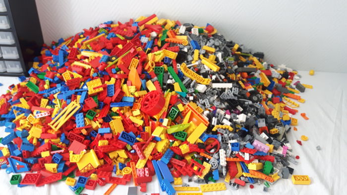

Losse LEGO® steentjes
Op deze pagina vindt u een aantal losse LEGO onderdelen zoals tandwielen, dieren, bomen, hekjes, minifiguur onderdelen en nog veel meer...

Op deze pagina vindt u een aantal losse LEGO onderdelen zoals tandwielen, dieren, bomen, hekjes, minifiguur onderdelen en nog veel meer...
